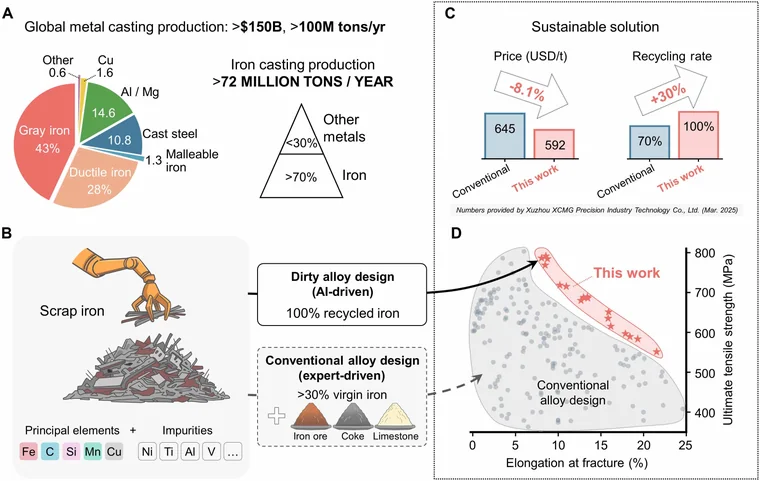

From scrap to prime: Designing high-performance alloys from dirty feedstocks with machine learning
Science Advances 12(42), eaeg9183, 2026
DAS-DAO pairs a recycling-oriented casting pipeline with AI-guided tree search to design ductile irons from 100% scrap: up to 15.2% higher tensile strength and 73.2% higher elongation, at 8.1% lower cost.